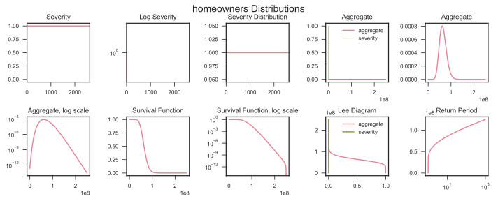

Tutorial¶
aggregate: Simple Examples¶
import pandas as pd
import matplotlib.pyplot as plt
import numpy as np
import seaborn as sns
from IPython.core.display import HTML, display
# pandas options
pd.set_option('max_rows', 50)
pd.set_option('max_columns', 30)
pd.set_option('display.max_colwidth', 150)
# matplotlib and plotting options
%matplotlib inline
%config InlineBackend.figure_format = 'svg'
# seaborn options
sns.set(context='paper', style='white')
sns.set_palette("husl", 4, .75)
sns.set_style("ticks")
import aggregate as agg
WARNING: 2 shift/reduce conflicts
uw = agg.Underwriter()
uw.list()
| Curves | Blocks | Books | |
|---|---|---|---|
| 0 | fixed | scs | bodoff1 |
| 1 | directors_a | casxol | bodoff2 |
| 2 | directors_b | cata | bodoff3 |
| 3 | directors_c | catb | bodoff4 |
| 4 | cata | catc | Three Line Example |
| 5 | catb | catd | Single |
| 6 | catc | cate | Mixed |
| 7 | catd | noncata | Sublines |
| 8 | cate | noncatb | small_medium_large |
| 9 | noncata | comm_auto | mass_test |
| 10 | noncatb | cmp | interesting_cat |
| 11 | comm_prop | ||
| 12 | homeowners | ||
| 13 | inland_marine | ||
| 14 | ppa | ||
| 15 | work_comp | ||
| 16 | my_earthquake | ||
| 17 | my_wind |
biz = uw.homeowners.write()
biz.update(np.linspace(0, 250e6, 1<<13), approximation='slognorm');
biz.plot('quick')
biz.plot('long')
C:UserssteveAnaconda3libsite-packagesmatplotlibaxes_base.py:3443: UserWarning: Attempting to set identical bottom==top results in singular transformations; automatically expanding. bottom=1.0, top=1.0 'bottom=%s, top=%s') % (bottom, top))
biz.audit_df
| name | limit | attachment | el | freq_1 | sev_1 | agg_1 | agg_m | agg_cv | agg_skew | |
|---|---|---|---|---|---|---|---|---|---|---|
| 0 | homeowners | 2500 | 0 | 6.50602e+07 | 4.33735e+06 | 15 | 6.50602e+07 | 6.50602e+07 | 0.240001 | 0.48 |
| mixed | homeowners | 2500 | 0 | 6.50602e+07 | 4.33735e+06 | 15 | 6.50602e+07 | 6.50602e+07 | 0.240001 | 0.48 |